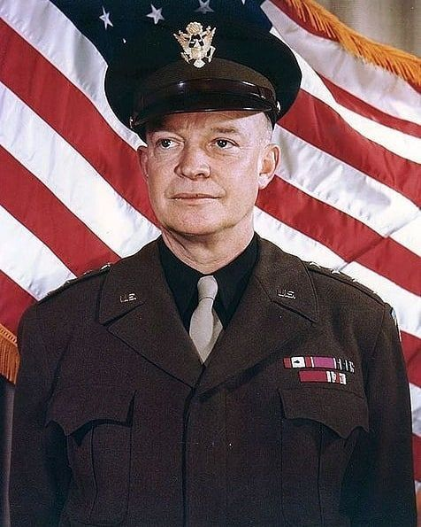

Sumber- Dwight D. Eisenhower (1890–1969) adalah Presiden ke-34 Amerika Serikat, yang juga dikenal sebagai salah satu komandan militer terkemuka selama Perang Dunia II. Berikut adalah informasi penting tentang hidup dan kariernya:
Lahir pada 14 Oktober 1890 di Denison, Texas, dalam keluarga yang sederhana. Eisenhower adalah anak ketiga dari tujuh bersaudara. Setelah lulus dari Akademi Militer Amerika Serikat di West Point pada 1915, Eisenhower memulai karier di militer
Perang Dunia I:
Eisenhower tidak bertugas langsung di medan perang selama Perang Dunia I, tetapi dia mendapatkan pengalaman militer penting di Amerika Serikat. Karier yang berkembang: Ia terus naik pangkat di militer dan mendapatkan reputasi sebagai seorang pemimpin yang cerdas dan terampil dalam strategi militer.
Perang Dunia II:
Eisenhower dikenal luas karena perannya dalam Perang Dunia II, di mana ia menjabat sebagai Komandan Tertinggi Sekutu di Eropa. Beberapa pencapaian utamanya termasuk: Invasi Normandia (D-Day, 6 Juni 1944): Eisenhower memimpin operasi pendaratan besar-besaran di Pantai Normandia, yang menjadi titik balik dalam Perang Dunia II di Eropa. Ia juga memimpin kampanye militer Sekutu di Afrika Utara dan Italia, yang mengarah pada kekalahan pasukan Jerman dan Italia. Pembebasan Eropa: Sebagai pemimpin Sekutu, Eisenhower berperan penting dalam mengalahkan Nazi Jerman dan membebaskan wilayah Eropa yang dikuasai Jerman.
Setelah Perang Dunia II, Eisenhower melanjutkan karier militernya dan menjabat sebagai Komandan Tertinggi NATO (1951–1952), memperkuat aliansi militer antara negara-negara Barat selama Perang Dingin.
Pada 1952, Eisenhower mencalonkan diri sebagai presiden dari Partai Republik dan menang dengan mengalahkan Adlai Stevenson. Dilantik pada 20 Januari 1953, Eisenhower menjadi presiden ke-34 Amerika Serikat dan menjabat dua periode (1953–1961).
1. Perang Dingin dan Kebijakan Luar Negeri: Kebijakan Kontainment: Eisenhower mendukung kebijakan containment terhadap komunisme yang diperkenalkan sebelumnya, yang bertujuan untuk mencegah penyebaran komunisme di luar wilayah Soviet. Intervensi di Koresia dan Vietnam: Meskipun Perang Korea berakhir pada 1953, Eisenhower melanjutkan kebijakan untuk melawan pengaruh komunis di Asia, termasuk mengirimkan bantuan kepada Vietnam Selatan dalam menghadapi ancaman komunis. Teori Domino: Eisenhower mengemukakan teori bahwa jika satu negara jatuh ke komunisme, negara-negara di sekitarnya akan mengikutinya, yang mendorong intervensi AS di berbagai negara seperti Indocina dan Timur Tengah.
2. Pembangunan Domestik dan Ekonomi: Interstate Highway System: Salah satu pencapaian terbesar Eisenhower adalah proyek jalan raya antarnegara bagian yang besar, yang mengubah lanskap transportasi di Amerika Serikat dan menjadi fondasi bagi pertumbuhan ekonomi di AS. Ekonomi yang Stabil: Ekonomi AS tumbuh stabil selama masa kepresidenannya, dengan fokus pada perdagangan internasional, industri, dan investasi infrastruktur.
3. Pengelolaan Krisis Suez (1956): Pada 1956, ketika Inggris, Prancis, dan Israel menyerang Mesir setelah Presiden Gamal Abdel Nasser menasionalisasi Terusan Suez, Eisenhower menentang intervensi militer mereka, yang menyebabkan Amerika Serikat memainkan peran utama dalam mencegah eskalasi konflik ini dan memperkuat pengaruh diplomatik AS.
4. Perubahan Sosial dan Hak Sipil: Eisenhower mendukung kesetaraan hak sipil dengan mengirimkan pasukan federal untuk mendukung integrasi sekolah di Little Rock, Arkansas pada 1957, setelah keputusan Mahkamah Agung AS yang membatalkan pemisahan rasial di sekolah-sekolah. Namun, meskipun ia mengambil beberapa langkah untuk memperjuangkan hak-hak sipil, kebijakan beliau tidak seagresif para pemimpin hak sipil pada masa itu.
Setelah menyelesaikan dua periode kepresidenan, Eisenhower pensiun pada 1961 dan kembali ke farming di Gettysburg, Pennsylvania. Ia tetap berpengaruh dalam politik dan memberikan nasihat kepada presiden-pemimpin berikutnya, serta menjadi suara yang dihormati dalam masalah internasional dan kebijakan pertahanan. Eisenhower meninggal pada 28 Maret 1969 akibat komplikasi penyakit jantung.
Warisan Eisenhower dikenang sebagai pemimpin yang rasional dan praktis yang berhasil menjaga stabilitas internasional selama masa-masa penuh ketegangan Perang Dingin. Strategi militer dan kepemimpinan diplomatik yang dijalankannya dalam Perang Dunia II dan sebagai presiden tetap menjadi acuan bagi banyak pemimpin militer dan politik di seluruh dunia. Kepresidenan yang moderat dan fokus pada pembangunan infrastruktur domestik serta diplomasi internasional menjadikan Eisenhower sebagai salah satu presiden yang dihormati di AS.